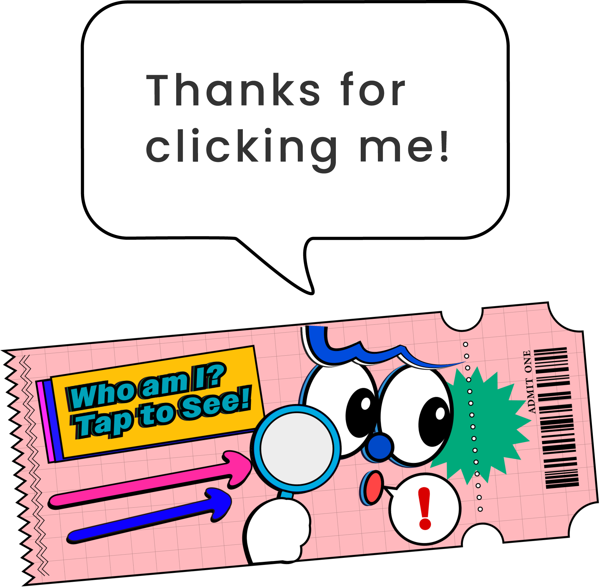
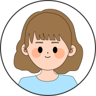
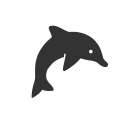
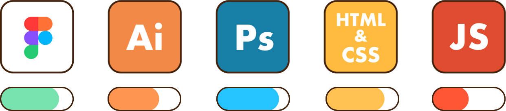

ABOUT ME


阿部 百香 - Momoka Abe
2001年4月生まれ。 高校卒業後、進学や学び直しを経験する中で、何度も自分と向き合ってきました。
2022年には、「これからの自分は何を大切にして生きたいのか」を考え抜き、Webの世界に進むことを決意。
2023年10月から専門スクールでWebデザインを学び、卒業後も毎日少しずつ手を動かしながらスキルを磨いてきました。
世界観の構築からUI設計、コーディングまで、一貫してカタチにできる力を育てています。
一度訪れたら、また戻ってきたくなる。 そんな“心が躍るサイト”を目指しています。
STRENGTH
-
好奇心と探究心
好きなことはとことん探究。気になると気が済むまで深掘りしてしまいます。学びを楽しむ気持ちが、日々の成長につながっています。さまざまなテイストのデザインにふれることで、柔軟に対応できる引き出しを増やしています。
-
やさしい世界観づくり
見る人の心に残るような、あたたかくてやさしい世界観を大切にしています。色や形に気持ちを込めて、空気感まで伝わるようにデザインしています。
-

誠実に向き合う力ひとつひとつの課題や作品に、丁寧にまっすくぐ向き合います。見えない部分まで手を抜かず、関わる方の気持ちを大切にしながら取り組んでいきます。
SKILLS
